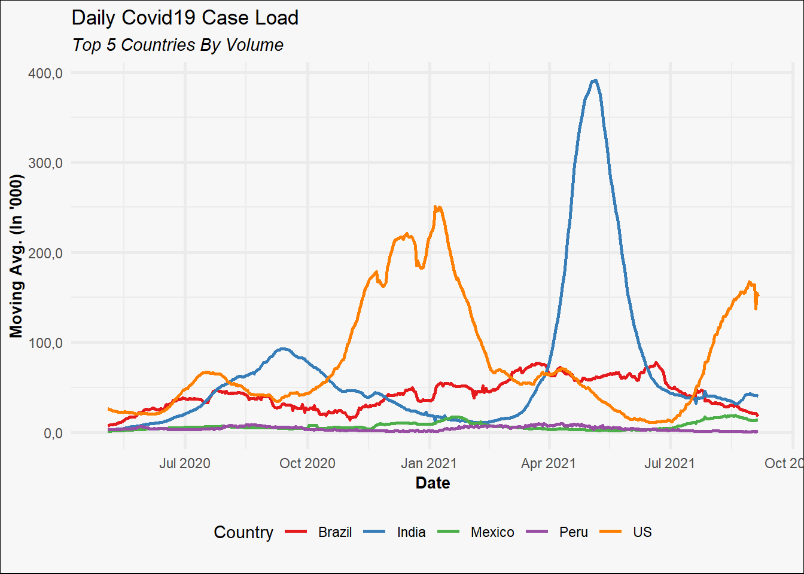
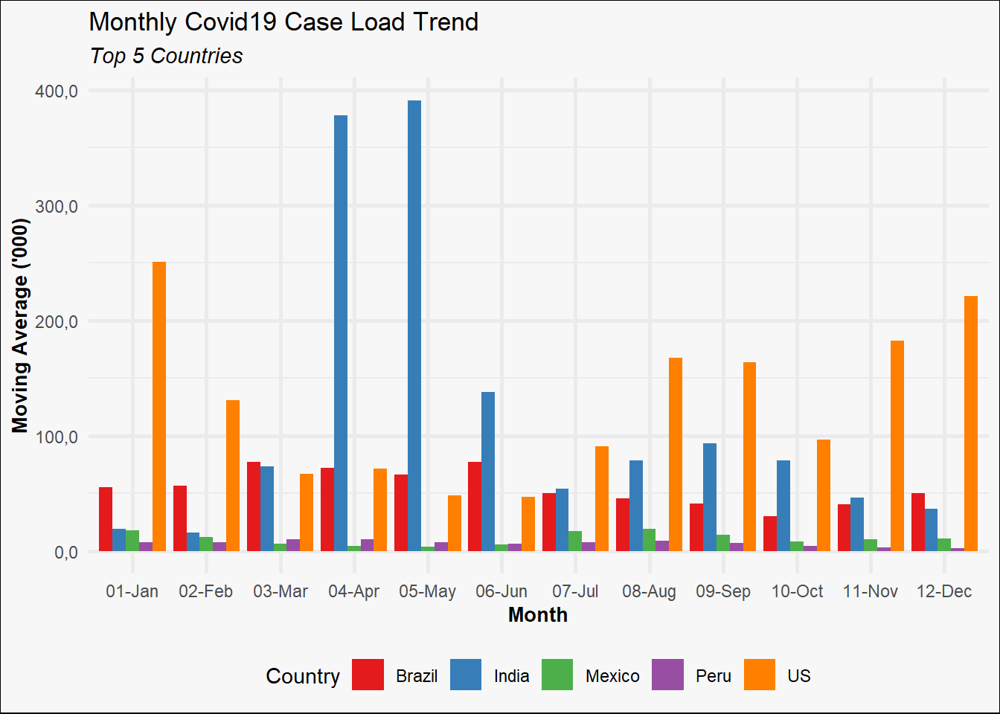

![]()
While R has variety of options to choose from when it comes to 2D graphics and data visualisation, it is hard to beat ggplot2 in terms of features, functionality and overall visual quality. I wanted to share my take on how to use the package which is, to make customised charting functions for specific chart types using ggplot2 as the underlying visualisation engine.
Libraries
# Pacman is a package management tool
install.packages("pacman")
library(pacman)
# p_load automatically installs packages if needed
p_load(dplyr, ggplot2, scales, stringr)
Sample dataset
A summarised version of the COVID-19 Data Repository hosted by JHU is available for download here
df <- read.csv("covid_data.csv")
Something of interest could be the daily number of confirmed cases for the top five countries (by volume). Some amount of data prep is needed to get to these numbers.
# Get top 5 countries
top_countries <- df %>%
group_by(country) %>%
summarise(count = sum(deaths_daily)) %>%
top_n(5) %>%
.$country
print(top_countries)
## [1] "Brazil" "India" "Mexico" "Peru" "US"
# Create a data frame with the required information
# Note that a centered 7 day moving average is used
plotdf <- df %>%
mutate(date = as.Date(date)) %>%
filter(country %in% top_countries,
date >= "2020-05-01") %>%
group_by(country, date) %>%
summarise(count = sum(confirmed_daily)) %>%
arrange(country, date) %>%
group_by(country) %>%
mutate(MA = zoo::rollapply(count, FUN = mean, width = 7, by = 1, fill = NA, align = "center"))
Simple example
Say we needed a line chart visualising the data we just prepared. Note the use aes_string() instead of just aes(). This lets us supply arguments to ggplot2 as strings.
# Function definition.
line_chart <- function(df, x, y, group_color = NULL, line_width = 1, line_type = 1){
ggplot(df, aes_string(x = x, y = y, color = group_color)) +
geom_line(size = line_width, linetype = line_type)
}
# Test run
line_chart(plotdf, x = "date", y = "MA", group_color = "country",
line_type = 1, line_width = 1.2)

Customised theme
Now that we know how to encapsulate the call to ggplot2 in a more intuitive manner, we can create a customised theme for our charts. This is useful since this theme can be applied to any chart.
custom_theme <- function(plt, base_size = 11, base_line_size = 1, palette = "Set1"){
# Note the use of "+" and not "%>%"
plt +
# Adjust overall font size
theme_minimal(base_size = base_size, base_line_size = base_line_size) +
# Put legend at the bottom
theme(legend.position = "bottom") +
# Different colour scale
scale_color_brewer(palette = palette)
}
# Test run
line_chart(plotdf, "date", "MA", "country") %>% custom_theme()

Adding bells and whistles
Now that we have some of the basic components, we can add some additional features to our line_chart() function.
line_chart <- function(df, x, y, group_color = NULL,
line_width = 1, line_type = 1,
xlab = NULL, ylab = NULL,
title = NULL, subtitle = NULL, caption = NULL){
# Base plot
ggplot(df, aes_string(x = x, y = y, color = group_color)) +
# Line chart
geom_line(size = line_width, linetype = line_type) +
# Titles and subtitles
labs(x = xlab, y = ylab, title = title, subtitle = subtitle, caption = caption)
}
We’ll also tinker with our custom_theme() function.
custom_theme <- function(plt,
palette = "Set1",
format_x_axis_as = NULL, format_y_axis_as = NULL,
x_axis_scale = 1, y_axis_scale = 1,
x_axis_text_size = 10, y_axis_text_size = 10,
base_size = 11, base_line_size = 1){
mappings <- names(unlist(plt$mapping))
p <- plt +
# Adjust overall font size
theme_minimal(base_size = base_size, base_line_size = base_line_size) +
# Put legend at the bottom
theme(legend.position = "bottom") +
# Different colour palette
{if("colour" %in% mappings) scale_color_brewer(palette = palette)}+
{if("fill" %in% mappings) scale_fill_brewer(palette = palette)}+
# Change some theme options
theme(plot.background = element_rect(fill = "#f7f7f7"),
plot.subtitle = element_text(face = "italic"),
axis.title.x = element_text(face = "bold",
size = x_axis_text_size),
axis.title.y = element_text(face = "bold",
size = y_axis_text_size)) +
# Change x-axis formatting
{if(!is.null(format_x_axis_as))
switch(format_x_axis_as,
"date" = scale_x_date(breaks = pretty_breaks(n = 12)),
"number" = scale_x_continuous(labels = number_format(accuracy = 0.1,
decimal.mark = ",",
scale = x_axis_scale)),
"percent" = scale_x_continuous(labels = percent))} +
# Change y-axis formatting
{if(!is.null(format_y_axis_as))
switch(format_y_axis_as,
"date" = scale_y_date(breaks = pretty_breaks(n = 12)),
"number" = scale_y_continuous(labels = number_format(accuracy = 0.1,
decimal.mark = ",",
scale = y_axis_scale)),
"percent" = scale_y_continuous(labels = percent))}
# Capitalise all names
vec <- lapply(p$labels, str_to_title)
names(vec) <- names(p$labels)
p$labels <- vec
return(p)
}
Now let’s see how it all comes together.
line_chart(plotdf,
x = "date",
y = "MA",
group_color = "country",
xlab = "Date",
ylab = "Moving Avg. (in '000)",
title = "Daily COVID19 Case Load",
subtitle = "Top 5 countries by volume")%>%
custom_theme(format_x_axis_as = "date",
format_y_axis_as = "number",
y_axis_scale = 0.001)

Bar chart example
The good thing about the custom_theme() function is that it can be applied to any ggplot2 object.
p <- plotdf %>%
mutate(month = format(date, "%m-%b")) %>%
ggplot(aes(x = month, y = MA, fill = country)) +
geom_col(position = "dodge") +
labs(title = "Monthly COVID19 Case load trend",
subtitle = "Top 5 countries",
x = "Month",
y = "Moving Average ('000)")
custom_theme(p, palette = "Set1", format_y_axis_as = "number", y_axis_scale = 0.001)

Parting notes
It is worth noting that building customised charting functions using ggplot2 is most useful when you need to create the same type of chart(s) again and again. When doing any kind of exploratory work, using ggplot2 directly is easier and more useful since you can build all kinds of charts (or layer charts of different types) within the same pipeline.
Thoughts? Comments? Helpful? Not helpful? Like to see anything else added in here? Let me know!